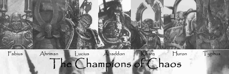

"Welcome to the Gallery. This is a place devoted to storing and displaying the artworks of the somewhat popular alias, Condog. He has created many barely passable images, although some are almost adequate. Feel free to wander and view his various pieces. It is updated with spontaneous donations from Condog himself. All we ask is that you don't touch any, as some are made from highly toxic materials. Enjoy your time here."
Sig Gallery


Sig Gallery
